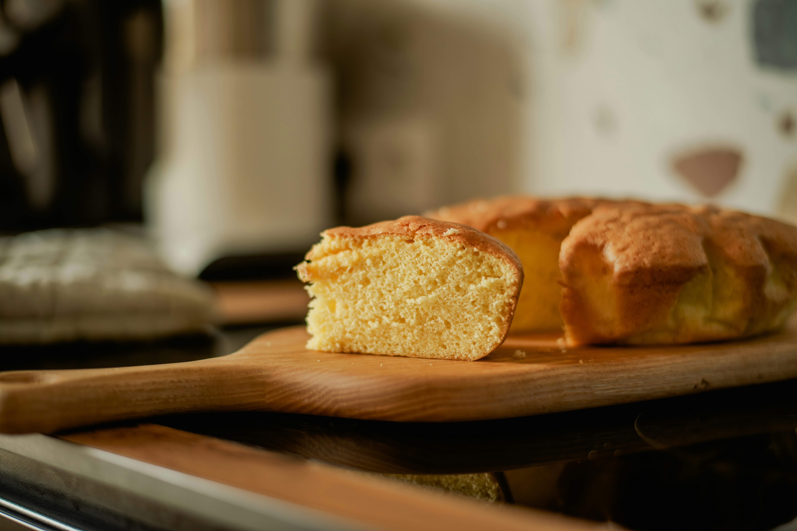

Gluten-Free Skillet Cornbread

About This Recipe
This is a take on a traditional Southern cornbread: forged in a skillet,
blessed by bacon fat, and free of sugar. While flour isn't typical
of cornbread from the Mountain South, some has been added to ensure
it holds together. This recipe has also been modified to be gluten-free
and uses King Arthur Gluten-Free Measure for Measure Flour. Also be sure
to use fresh liquid buttermilk to preserve the flavor of the recipe!
Ingredients
- 50g bacon fat or beef tallow
- 245g whole cornmeal
- 60g King Arthur Gluten-Free Measure for Measure flour
- 1/2 teaspoon baking powder
- 1/2 teaspoon baking soda
- 1/4 teaspoon table salt
- 1 large egg
- 340g buttermilk, well shaken
Instructions
- Put the bacon fat in 9" or 10" cast iron skillet and place
in the oven as it preheats to 450°F.
- Whisk together the cornmeal, four, baking powder, baking soda,
and salt in a medium bowl.
- In a separate bowl, whisk together the egg and buttermilk. Make
a well in the center of the cornmeal micture and pour in the egg
mixture. Stir only until blended.
- Remove the skillet from the oven and pour in the batter. The
skillet will be hot and the batter will sizzle and pop so be careful.
- Bake until the cornbread is firm in the middle and golden brown on top,
about 25 minutes. Turn out onto a cutting board or cooling rack and
serve hot.
Home
Photo by Eugenia Pan'kiv
on Unsplash